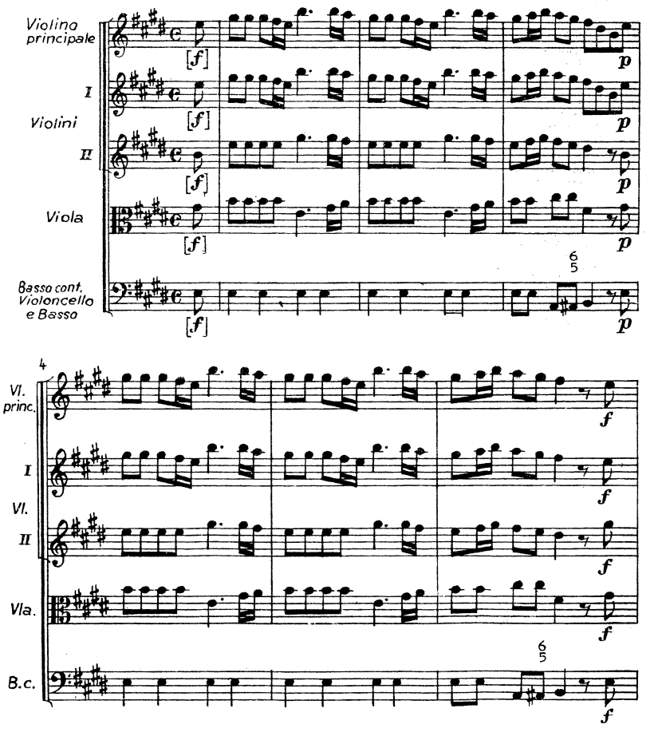
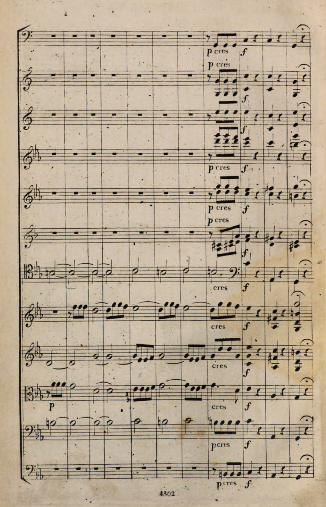
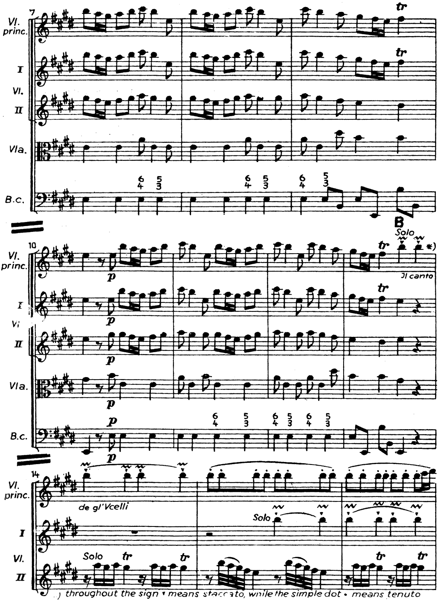

I wanted to test GPT-5's musical acumen by feeding it scanned sheet music --- first page with music, cropping out the title, author, and any other "metadata". I opened the PDFs in-browser and took PNG screenshots (as of this writing, GPT-5's free tier can't take in PDFs anyway). For each piece, I opened a new private chat and used this prompt:
What are the title and author of the piece corresponding to the attached score? In one sentence, explain how you identified these. Your output format should be as follows: [Title], [Author]. [One-sentence explanation]
The images on this page are the exact ones I fed to ChatGPT, whose responses are reproduced in full. The images were input with the same filename "piece.png". The scores used are all in the public domain, sourced from IMSLP.
Level 1: Famous classical pieces
To start off easy, I looked at the track listing of the London Philharmonic's 50 Greatest Pieces of Classical Music and chose the three pieces from their first 10 which I thought were most universally famous (IMSLP pages linked):
- Beethoven's Symphony No. 5 in C minor, op. 67
- Vivaldi's The Four Seasons, op. 8, "Spring"
- Pachelbel's Canon in D Major
Beethoven, from the PDF hosted here (click to expand input image)

Symphony No. 5 in C minor, Op. 67, Ludwig van Beethoven. I identified this piece from the iconic rhythmic motif (short-short-short-long) and orchestration at the beginning of the score, which matches the opening of Beethoven's Fifth Symphony.
Vivaldi, from the PDF hosted here (click to expand input image)
Concerto in A Major "Die Relinge", TWV 51:A4 by Georg Philipp Telemann. I recognised it from the instrumentation header “Violino principale / Violini I & II / Viola / Basso continuo,” the style of the ritornello texture, and matching it with Telemann’s “Die Relinge” concerto catalogue entries.
Pachelbel, from the PDF hosted here (click to expand input image)

Musical Offering (Musikalisches Opfer), BWV 1079, Johann Sebastian Bach. I identified this from the distinctive layout and notation style of the Ricercar a 6, a well-known fugue from this work, as well as the handwriting and instrumentation matching Bach’s autograph manuscripts.
1/3 is surprisingly bad. Not only are these extremely well-known pieces, whose chord progressions and other musical qualities have presumably been discussed to death online, but even with the title and author cropped out, there's a lot of information present which could help GPT-5 identify the piece. All three images contain the clefs, instruments, time, and key. The explanation given by ChatGPT isn't necessarily relevant, and theoretically, the identification could hit or miss based on factors not mentioned in the output justification. The Beethoven, which ChatGPT idenfitied correctly, does have something missing from the others --- its precise tempo. To check whether this made the difference, I repeated the test, prepending this to my prompt:
This piece has a tempo of [TEMPO].
The results:
Beethoven
I couldn’t conclusively identify the piece based on the score image and tempo alone. The orchestration (timpani, clarini, corni, flauti, oboi, clarinetti, fagotti, strings) and the tempo marking “Allº con brio d = 108” are consistent with 18th‑century classical symphonies, but I found no match in my searches.
Vivaldi
The piece corresponding to the attached score is "Allegro" by Joseph-Hector Fiocco. This identification is based on the tempo marking "Allegro" and the context provided by the attached score, which aligns with Fiocco's "Allegro for Violin and Piano".
Pachelbel
The Musical Offering, BWV 1079 – Ricercar a 6, Johann Sebastian Bach. I identified this by recognizing the distinctive six-voice ricercar score layout, handwriting style, and the Staatsbibliothek Berlin stamp associated with Bach’s manuscripts.
Now we're 0/3 after having confused ChatGPT about the Beethoven piece. The "Allegro" tempo really misled ChatGPT on Vivaldi, giving us a new wrong answer, while the guess and justification for Pachelbel remain the same (though the library stamp mention is new).
Could extra information, like orchestration and tempo, be confusing ChatGPT?
Level 2: Famous classical pieces, second page
At this point I didn't have high hopes, but I wanted to try the second pages of each of the scores. Perhaps ChatGPT was being distracted by the extra information and would do better with just the melody. Again, these are world-famous pieces; surely GPT's training includes lots of content about this music.
Beethoven, second page (click to expand input image)
I don’t know what piece that is.
Vivaldi, second page (click to expand input image)
[Concerto for Two Violins in D minor, BWV 1043], [Johann Sebastian Bach]. I identified this piece by recognizing the distinctive notation and structure typical of Bach's concertos, particularly the presence of two solo violins and the specific BWV catalog number.
Pachelbel, second page (click to expand input image)

I can't identify the title and author of the piece from the score provided.
We've regressed to clear hallucinations (what BWV catalogue number? There's none I can see on that page of the Vivaldi score). At least the two admissions of ignorance are preferable to confidently wrong guesses, as we've mostly been getting so far.
Level 0: Famous classical pieces, first five notes
So, was all hope lost? I certainly doubted there was a point to introducing more difficult scores. Instead, I wanted to check that ChatGPT could even read the notation, so I fed in the first pages again and asked for the first five notes. My prompt was:
What are the first five notes of this piece? Output only the notes, separated by commas.
Beethoven (close, but it's A, A, A, F, G)
G, G, G, Eb, F
Vivaldi
I don’t know.
Pachelbel
I don’t know.
Pretty awful. Anecdotally, I tried just this exercise with Gemini 2.5 Flash and it was confidently incorrect in all three cases. I didn't even obscure the filenames, which included the author and title, but it relied exclusively on image analysis and didn't verify with any internet searches.
Unfortunately, despite large advances in multimodality, it seems from these simple tests there's a ways to go before musicians can use these models for work involving sheet music.